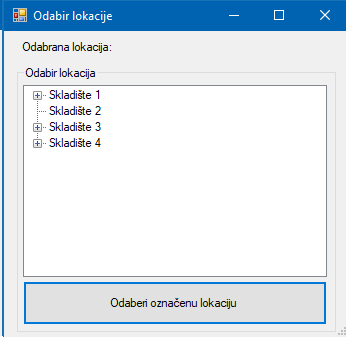

Prozor "Odabir lokacije" služi za odabir lokacije na koju će se roba dodati. Prikazuje sve moguće lokacije u skladištu i klikom na lokaciju ta lokacija se odabire. Kad smo zadovoljni s odabirom lokacije klikom "Odaberi označenu lokaciju" se vraćamo na prijašnji prozor.
